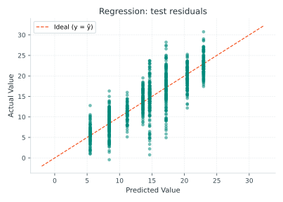
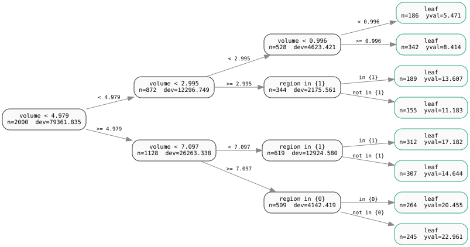
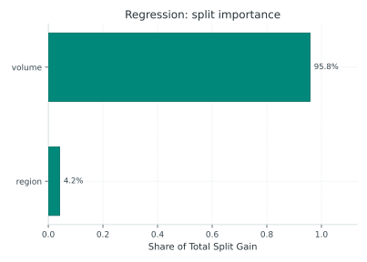
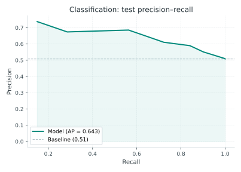
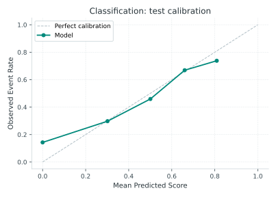
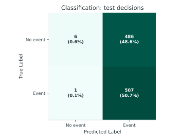
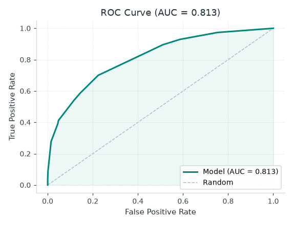
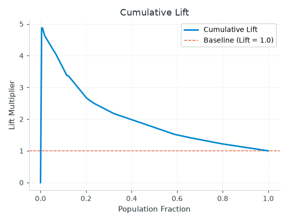
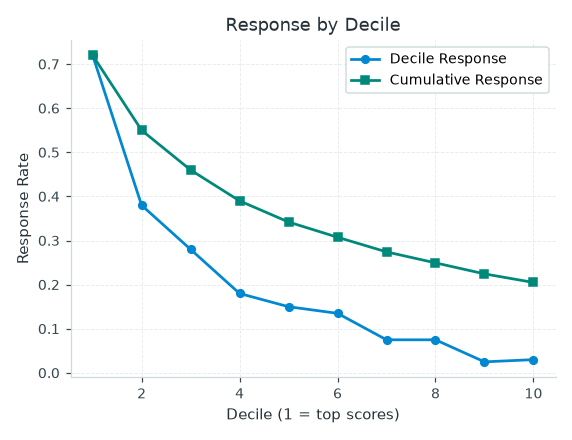
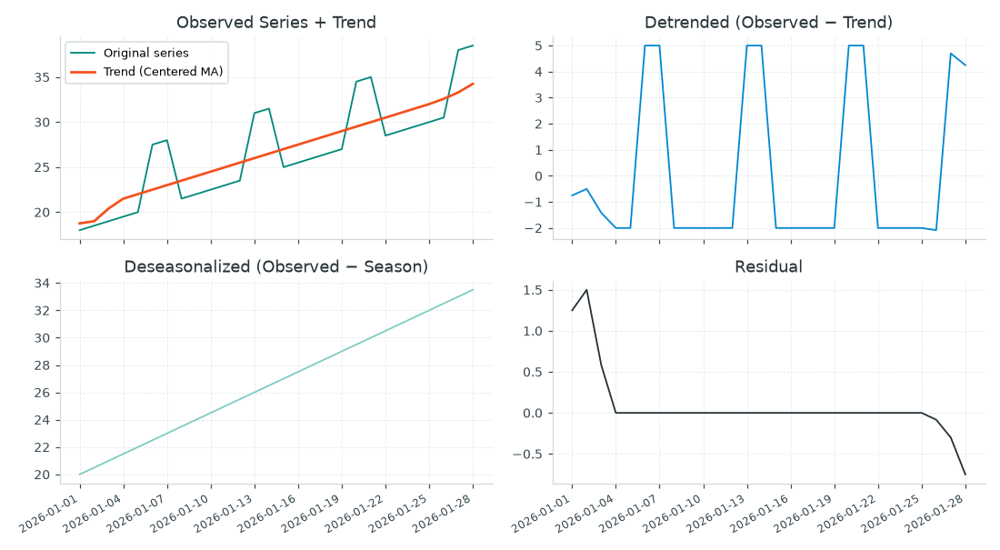

Visualize data, model behavior and decisions¶
Use charts to answer a question at each step. The plots below come from the same reproducible data and metrics example. It uses synthetic mixed data, raw category labels and missing numeric inputs.
| Question | View | How to use it |
|---|---|---|
| Where are inputs missing? | Missingness counts | Compare fields, sources and time periods before deciding on data-quality work. |
| Where are numeric predictions wrong? | Residuals | Look for patterns and large errors on held-out observations. |
| How does a ranking trade precision for recall? | Precision–recall | Compare operating points with the event rate and review capacity. |
| Do predicted probabilities match outcomes? | Calibration | Compare predicted and observed rates, with bin counts and sample size. |
| What happens at the chosen threshold? | Confusion matrix | Read actual classes by row and predicted classes by column. |
| How does the fitted tree partition data? | Tree diagram and split importance | Review conditions, names, support and missing routing. |
Reproduce the charts¶
The script needs matplotlib and writes SVG files to docs/assets/guides/. It uses the existing mltreelib.plots functions for model diagnostics. Install the project plotting extra for those dependencies. To render the DOT tree, install the Graphviz dot executable. The numerical metrics and tree DOT representation do not require Graphviz.
Use the plotting API¶
This complete example plots a small held-out regression result. The plotting layer is optional; Metrics returns numeric reports without matplotlib.
import matplotlib.pyplot as plt
from mltreelib import Metrics, plots
actual = [1.0, 2.0, 3.0, 4.0]
predicted = [1.2, 1.8, 3.4, 3.7]
print("MAE:", Metrics().regression(actual, predicted)["mae"])
fig, ax = plt.subplots()
plots.plot_residuals(actual, predicted, ax=ax)
fig.tight_layout()
plt.close(fig)

Read a tree and explain one row¶

model.to_dot() returns DOT text. Supply that text to Graphviz to render a diagram. model.splits() and model.leaves() expose structured information, while model.break_down(row) supports a path-based explanation for numeric rows. A test with raw string categories raised TypeError even though prediction accepted those rows. Mixed-category explanations are a product gap to investigate. Use tree inspection for examples. Verify category labels and missing routing before presenting a rule as actionable. A path explains a prediction; it does not by itself establish a causal intervention.

Split importance summarizes gain in a particular fitted tree. It is not a causal effect. Compare it with held-out errors and domain knowledge.
Evaluate a classification decision¶



The evaluation pathway explains the validation threshold, baseline and synthetic results. The catalog below covers the remaining plot functions.
Complete plot catalog¶
The public mltreelib.plots module exposes the functions below. y_true is the observed outcome. scores are model scores for the positive class. Classification plots expect aligned binary outcomes and scores. Use held-out data for assessment. The linked images come from the earlier metrics showcase and are illustrative; run the showcase to regenerate them.
| Question | Function | View |
|---|---|---|
| How does ranking separate positives and negatives? | plot_roc(y_true, scores) |
ROC |
| What precision accompanies each recall? | plot_pr(y_true, scores) |
Precision–recall |
| How many events do the top-scored cases capture? | plot_cumulative_gain(y_true, scores) |
Cumulative gain |
| How much better is targeting than the base event rate? | plot_lift(y_true, scores) |
Lift |
| Where is class separation largest? | plot_ks(y_true, scores) |
KS |
| How do outcome rates and capture vary by score band? | plot_decile(y_true, scores, n_buckets=10) |
Decile profile |
| Do predicted probabilities agree with observed frequencies? | plot_calibration(y_true, scores, n_bins=10) |
Calibration |
| How does observed response vary by score band? | plot_response(y_true, scores, n_buckets=10) |
Response |
| How do two sets of predictions compare? | plot_double_lift(y_true, scores_a, scores_b) |
Double lift |
| How did a score or numeric feature distribution change? | plot_psi(reference, current, n_bins=10) |
PSI |
| What decisions were correct or incorrect? | plot_confusion_matrix(confusion, class_names=None) |
Confusion matrix |
| Where do numeric predictions miss? | plot_residuals(y_true, y_pred) |
Residuals |
| Which features contributed split gain? | plot_importance(model.feature_importance()) |
Importance |
| How does one prediction decompose along its path? | plot_breakdown(model.break_down(row)) |
Break-down |
| What signal components did the generator realize? | plot_variance_shares(shares) |
Variance shares |
| How does a series decompose? | plot_decomposition(values, trend, detrended, deseason, residual, dates=None, axes=None) |
Decomposition |


A calibration plot is a diagnostic. It does not fit a probability calibrator or change model predictions. Fitted post-hoc calibration is on the roadmap.
The chart functions accept an optional Matplotlib ax; plot_decomposition uses axes for its panels. When using your own axes, use the axes you supplied rather than relying on a return value. See examples/metrics_showcase.py for calls and chart generation. The evaluation pathway explains how to choose a threshold and interpret held-out results.




When exporting a decision as a rule, check split boundaries using the fitted model. The current DOT labels differ from prediction at an exact numeric split threshold in the checked example.